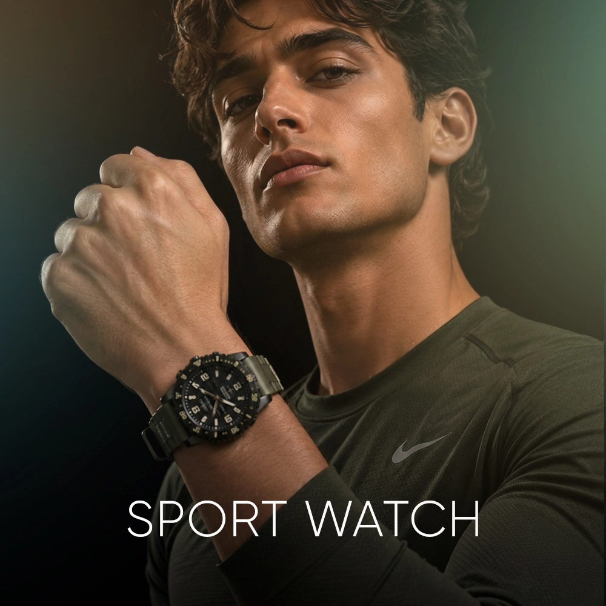
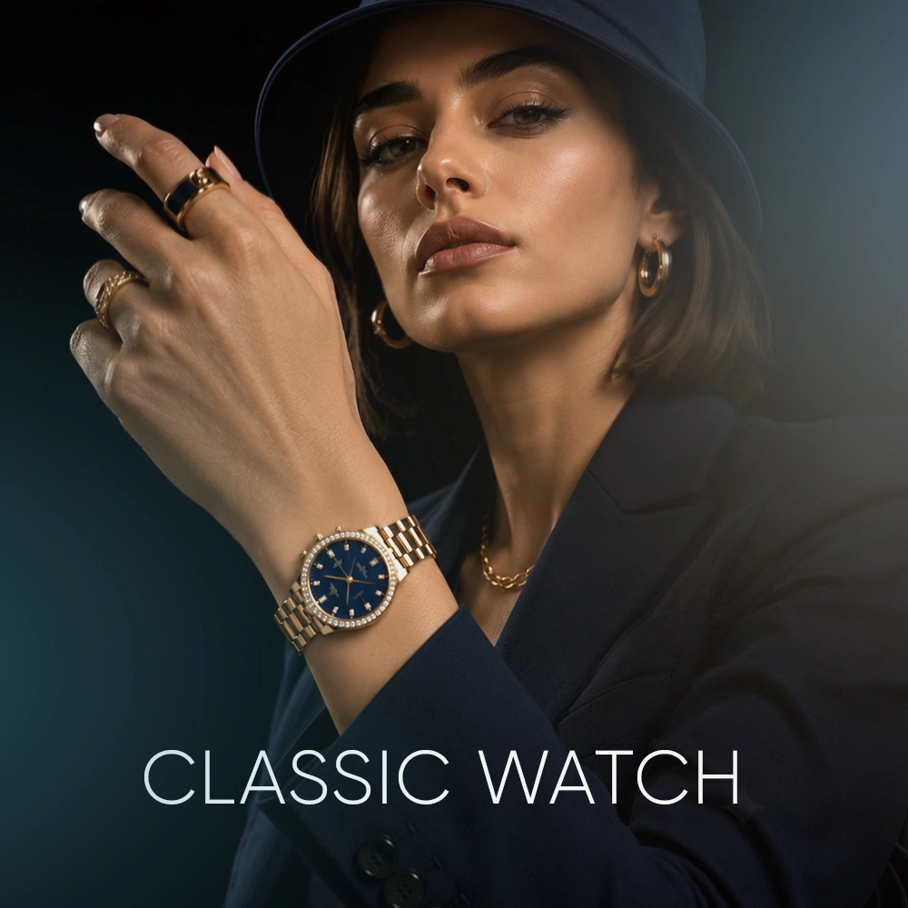
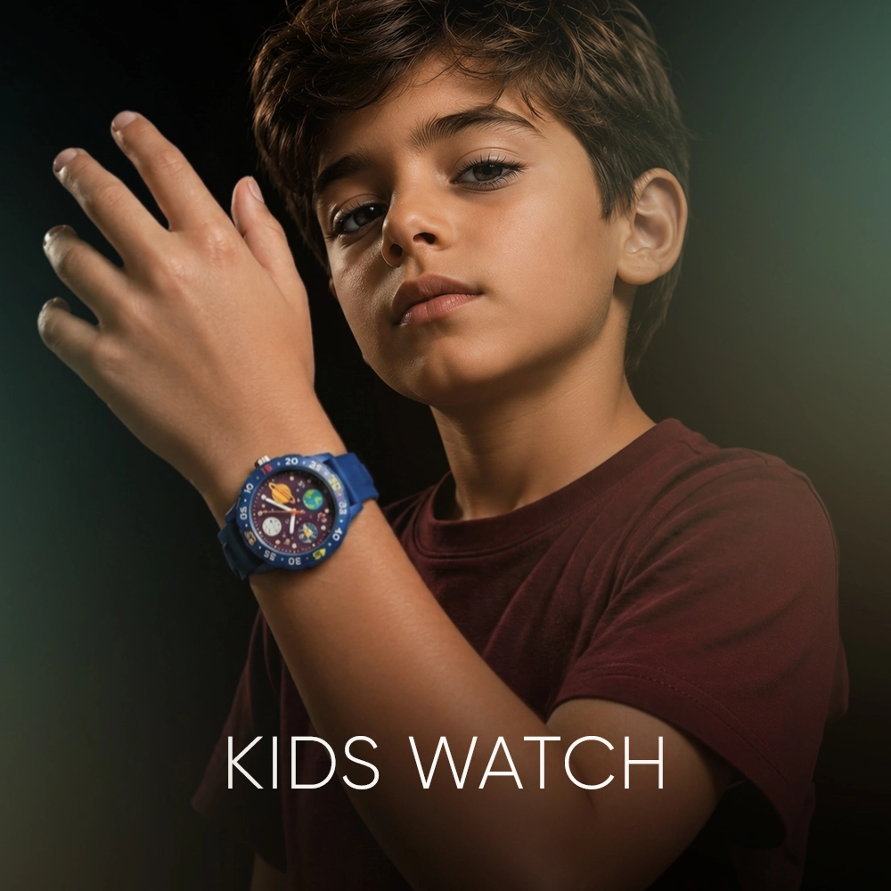

 ساعت مردانه ویولت (VIOLET) رفرنس 0299G-818، یک مدل کلاسیکِ باشکوه است که با ترکیب رنگی هوشمندانهی طلایی و نقرهای، استایلی لوکس و ماندگار را به نمایش میگذارد. اگر به دنبال ساعتی هستید که هم در جلسات رسمی و هم در مهمانیهای شبانه بدرخشد، این مدل با طراحی “دیتجاست” (Datejust) الهامگرفته، انتخابی بینقص برای آقایان خوشپوش است. طراحی و جلوههای بصری: در نگاه اول، بزل (حاشیه دور قاب) دندانهدار و درخشانِ این ساعت، چشمها را به خود خیره میکند. ترکیب رنگ طلایی و نقرهای در بند ...
ادامه مطلب:و بدنه، تضادی ایجاد کرده که ساعت را هم با زیورآلات نقرهای و هم با اکسسوریهای طلایی سازگار میکند. صفحه ساعت، سفید و مینیمال است و به جای اعداد، از نگینهای درخشان سواروسکی (Swarovski) به عنوان ایندکسهای ساعت استفاده شده است؛ جزئیاتی که در بازتاب نور، درخششی خیرهکننده به مچ دست شما میبخشد. کیفیت ساخت و متریال: در ساخت این ساعت، هیچ مصالحهای در کیفیت انجام نشده است. بدنه و بند این مدل تماماً استیل با کیفیت ضد حساسیت است که نه تنها در برابر خط و خش و تعریق مقاوم است، بلکه برای افرادی با پوستهای حساس، انتخابی کاملاً ایمن و راحت محسوب میشود. بند دورنگ این ساعت با چفتوبست محکم و طراحی کلاسیک، به خوبی روی مچ دست مینشیند و حس یک کالای باارزش و مهندسیشده را منتقل میکند. مشخصات فنی: شیشه: مجهز به شیشه معدنی (Mineral Crystal) با مقاومت استاندارد در برابر ضربات و خطوخشهای روزمره، که شفافیت فوقالعادهای به صفحه داده است. موتور: بهرهگیری از موتور کوارتز ژاپنی، که دقت بالای آن تضمینکنندهی وقتشناسی شما در تمام لحظات است. مقاومت در برابر آب: طبق حکاکی روی صفحه، این مدل تا ۵۰ متر (5ATM) در برابر آب مقاوم است که خیال شما را از بابت شستشوی دست و پاششهای احتمالی آب راحت میکند. کاربری: ایدهآل برای ست کردن با کتوشلوارهای رسمی، استایلهای کلاسیک و حتی استفاده روزمره برای آقایانی که دوست دارند همیشه در صدر باشند. این ساعت ویولت، فراتر از یک ابزار زمانسنج، یک امضای استایل برای آقایانی است که به جزئیات اهمیت میدهند. |
 ساعت مچی زنانه از گذشته تا حال یکی از محبوب ترین و پرطرفدار ترین اکسسوری های زنانه است و امروزه خریدارن به دنبال ساعت هایی هستند که زیبا و منحصر به فرد باشد. ساعت مچی زنانه الگانس یک برند ژاپنی معروف است که در زمینه ی تولید ساعت های باکیفیت و زیبا شناخته شده است که به دلیل داشتن ویژگی های فوق العاده و شیک به یکی از پرفروش ترین ساعت های جهان تبدیل شده است. این ساعت جزء ساعت های کلاسیک و آنالوگ محسوب می شود و مناسب برای بانوان خوشتیپ می باشد. ساعت مچی الگانس باتری بسیار قوی دار ...
ادامه مطلب:و دارای بند استیل می باشد. بند استیل، اغلب محبوب ترین انتخاب برای بانوان است. صفحه ی ساعت این برند دارای شیشه با سختی بالا می باشد، همچنین قلب تپنده ی آن یعنی موتور ساعت، از نوع کوارتز است. به دلیل اقتصادی بودن این ساعت فقط موتور اصلی و تقویم آن کار میکند و سه موتور بقیه نمایشی هستند . این ساعت به شکل دایره طراحی شده است که دارای قطر 38 میلی متر و بی نهایت ظریف است و مناسب برای بانوانی که دستان ظریف دارند توصیه می شود. ساعت مچی آنالوگ به ساعت هایی می گویند که دارای اعداد و عقربه می باشند و از قدیم مورد استفاده قرار می گیرند. بانوانی که به استایل های کلاسیک و اصیل علاقه دارند برای خرید ساعت زنانه، ساعت های آنالوگ را انتخاب می کنند. این ساعت دارای موتور بسیار قوی و متریال حرفه ای و استیل بسیار با کیفیت و ضد زنگ می باشند که به استایل اصیل و کلاسیک شما، با طراحی های منحصر به فرد خود، جلوه ی بیشتری خواهد داد. ساعت مچی الگانس با دقت بالایی به انتخاب مواد اولیه و استفاده از تکنولوژی های پیشرفته پرداخته است و مدل های مختلف آن دارای عمق آب گیری مختلفی است که برخی از آن ها مناسب شنا غواصی هستند. این مدل ساعت مچی الگانس زنانه به صورت ضد آب طراحی شده است که آب داخل آن نفوذ نکند و قابلیت تحمل ناشی از فرو رفتن در درون آب را داشته باشد. با وجود این قابلیت دیگر نیازی نیست که در طول روز به دلایل مختلف از جمله شستن دست ها و انجام هر کاری که با آب ارتباط دارد، ساعت مچی خود را از دست باز کنید. ساعت الگانس جزء ساعتهای گران بازار است و همین نشان دهنده کیفیت بالا و متریال درجه یک است . شما می توانید با اطمینان خاطر، این نوع ساعت مچی را برای خود یا برای دوستان و نزدیکان خود خریداری کنید |

این ساعت مچی عقربهای با طرح شخصیت محبوب اسپایدرمن، انتخاب مناسبی برای کودکان است که به استایلی ورزشی و روزمره گرایش دارند. این ساعت با طراحی رنگی و شاداب خود، میتواند جلوهای بازیگوش و جوانپسند به استایل فرزندتان بدهد و به راحتی در کنار لباسهای کژوال و اسپرت قرار بگیرد. همچنین نور پسزمینه ساعت امکان استفاده در فضاهای کمنور را فراهم کرده، که برای موقعیتهای مختلف روزمره کاربردی است. بهکارگیری بند پلاستیکی و قفل سگکی باعث شده این ساعت به راحتی در دست فیکس شود و حس راحتی ...
ادامه مطلب:در طول روز ایجاد کند، به همین دلیل میتوان آن را با انواع تیشرتها، شلوارهای جین و کفشهای اسپرت همراه کرد تا ظاهری هماهنگ و پرانرژی شکل بگیرد. این ساعت برای موقعیتهای غیررسمی، بازیهای بیرون از خانه و فضاهای تفریحی کودکان گزینهای مناسب جهت تکمیل استایل روزانه محسوب میشود. |